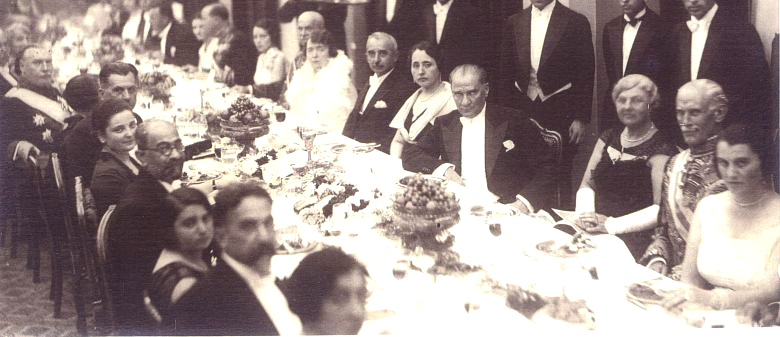
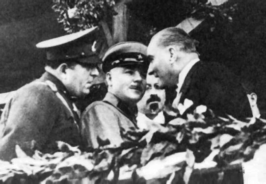

In his message to Vladimir Lenin, the Bolshevik leader and head of the Russian SFSR's government, dated 26 April 1920, Kemal promised to coordinate his military operations with the Bolsheviks' "fight against imperialist governments" and requested 5 million lira in gold as well as armaments "as first aid" to his forces. In 1920 alone, the Lenin government supplied the Kemalists with 6,000 rifles, over 5 million rifle cartridges, 17,600 projectiles as well as 200.6 kg of gold bullion; in the subsequent 2 years the amount of aid increased.

In March 1921, the GNA representatives in Moscow signed the "Friendship and Brotherhood" Treaty with Soviet Russia, which was a major diplomatic breakthrough for the Kemalists. The Treaty of Moscow, followed by the identical Treaty of Kars in October the same year, gave Turkey a favourable settlement of its north-eastern frontier at the expense of the Armenian Soviet Socialist Republic, then nominally an independent state.
Relations between the two countries were friendly, but were based on the fact that they were fighting against a common enemy: Britain and the West. In 1920, Kemal toyed with the idea of using a state-controlled Turkish Communist Party to forestall the perceived spread of communist ideas in the country and gain access to the Comintern's financing.

After the Turks, on 16 December 1925, withdrew their delegation from Geneva, thus leaving the League of Nations Council to grant a mandate for the Mosul region to Britain without their consent, Kemal countered by concluding a non-aggression pact with the USSR on 17 December. In 1935, the pact was prolonged for another 10 years.
In 1933, the Soviet War minister Kliment Voroshilov visited Turkey and attended the tenth year celebrations of the Republic. Kemal explained his position regarding the realization of his plan for a Balkan Federation economically uniting Turkey, Greece, Romania, Yugoslavia and Bulgaria.